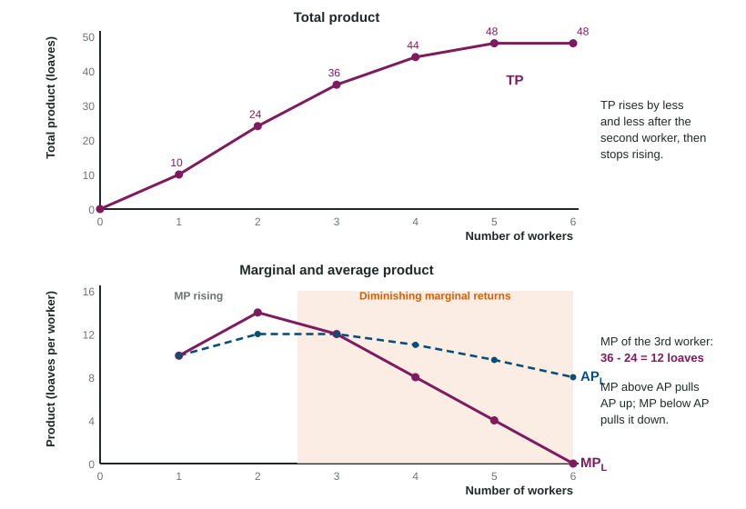

A food truck with one grill hires a second cook, and the line moves much faster. A third cook still helps. By the fifth cook, people bump elbows and wait for a turn at the grill. The truck has not changed, so each new cook adds less food than the one before. Economists call this pattern diminishing marginal returns, and it sits under every cost curve in this unit.
The production function
A firm turns inputs (labor, capital such as machines and buildings, land and the entrepreneur's effort) into output. The production function is the relationship between the inputs a firm uses and the most output it can make from them. It is about physical amounts, loaves of bread or baskets of berries, not dollars.
Economists split time into two periods by what the firm can change, not by the calendar:
- In the short run, at least one input is fixed. A bakery can hire more bakers this week, but it cannot build a bigger kitchen.
- In the long run, every input can change: the bakery can add ovens, move to a larger building or close a location.
A short run can be weeks for a food truck and years for a power plant.
Total, marginal and average product
Three measures describe what labor produces when the other inputs are fixed:
- Total product (TP): all the output.
- Marginal product (MP): the extra output from one more worker, .
- Average product: output per worker, .
Worked example: a bakery with one oven. With 0 to 6 workers, the bakery makes 0, 10, 24, 36, 44, 48 and 48 loaves a day.
- Marginal product. Subtract each total from the next: 10, 14, 12, 8, 4 and 0 loaves. The third worker adds loaves.
- Average product. Divide each total by the number of workers: 10, 12, 12, 11, 9.6 and 8. With five workers, .
- Divide by the change in labor. If a table jumps from 2 to 4 workers and output from 24 to 44, the marginal product is loaves per added worker, not 20.
- Read the pattern. MP rises for the first two workers, falls from the third, and is zero for the sixth, when total product stops rising.

Why marginal product rises, then falls
With only one or two workers, the oven sits idle part of the time and each worker does every task. Adding workers lets them specialize: one mixes dough, one shapes loaves, one runs the oven. Marginal product rises.
Sooner or later the fixed input becomes the limit. Each new worker has less oven time to use, so each adds less than the one before. This is diminishing marginal returns: in the short run, as more of a variable input is added to a fixed input, its marginal product eventually falls. It happens even when every worker is equally skilled. If workers are added after marginal product reaches zero, they get in each other's way and marginal product turns negative, so total product falls.
| Stage | Marginal product | Total product |
|---|---|---|
| Specialization | rising | rising faster and faster |
| Diminishing marginal returns | falling, still positive | rising more slowly |
| Peak | zero | at its maximum |
| Crowding | negative | falling |
How marginal and average product relate
Think of your grade average. A new score above your average pulls it up; a score below it pulls it down. In the same way, when MP is above average product, average product rises, and when MP is below average product, average product falls. So the MP curve crosses the average product curve at the highest point of average product: in the bakery, at the third worker, where both are 12 loaves.
Diminishing marginal returns do not mean output falls. They mean output rises by less with each worker. Keep that difference clear on the exam.
Why this matters next
Every worker is paid, so when each new worker adds fewer loaves, each extra loaf takes more paid work to make. In the next topic that becomes the rising cost of extra output, which gives the cost curves their U shape. In the long run, when the firm can change every input, the question becomes how cost changes with the size of the whole firm, in Topic 3.3.